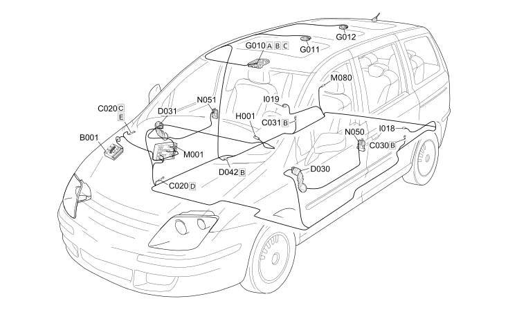

E2510 COURTESY LIGHTS COMPONENT LOCATION
- Path
- Electrical equipment > 1 ELECTRICAL FUNCTIONS > E25 INTERIOR LIGHTING > E2510 COURTESY LIGHTS > E2510 COURTESY LIGHTS COMPONENT LOCATION
- Kind
- topic
- Applies to
- engines: 2.0 16V JTD, 2.2 16V JTD; all production periods; only with equipment: MY 2005
- Interactive page
- https://sloeber94.github.io/elrnDB-fUlss/en/#/179008780
Applies to: engines: 2.0 16V JTD, 2.2 16V JTD; all production periods; only with equipment: MY 2005

Component code | Description | Reference to the assembly |
|---|---|---|
ENGINE COMPARTMENT JUNCTION UNIT | ||
PASSENGER SIDE DASHBOARD EARTH | - | |
LEFT REAR EARTH | - | |
RIGHT REAR EARTH | - | |
DRIVER'S FRONT DOOR COUPLING | - | |
PASSENGER FRONT DOOR COUPLING | - | |
COURTESY LIGHT COUPLING | - | |
FRONT COURTESY LIGHT | ||
PASSENGER AREA FRONT COURTESY LIGHT | ||
PASSENGER AREA REAR COURTESY LIGHT | ||
Ignition switch | ||
SWITCH ON LEFT REAR DOOR | - | |
SWITCH ON RIGHT REAR DOOR | - | |
BODY COMPUTER | ||
CENTRAL DOOR LOCKING CONTROL UNIT | - | |
LEFT FRONT DOOR LOCK GEARED MOTOR | Op. 7005N FRONT DOOR CENTRAL LOCKING SYSTEM | |
RIGHT FRONT DOOR LOCK GEARED MOTOR | Op. 7005N FRONT DOOR CENTRAL LOCKING SYSTEM |
Topics linked from this page (20)
- 5505A MULTI-FUNCTION COMPONENTS
- 5520A IGNITION SWITCH
- 7040E INTERIOR COURTESY LIGHT SYSTEM
- B001 ENGINE COMPARTMENT JUNCTION UNIT
- C020 PASSENGER SIDE DASHBOARD EARTH
- C030 LEFT REAR EARTH
- C031 RIGHT REAR EARTH
- D030 DRIVER'S FRONT DOOR COUPLING
- D031 PASSENGER FRONT DOOR COUPLING
- D042 COURTESY LIGHT COUPLING
- G010 FRONT COURTESY LIGHT
- G011 PASSENGER AREA FRONT COURTESY LIGHT
- G012 PASSENGER AREA REAR COURTESY LIGHT
- H001 Ignition switch
- I018 SWITCH ON LEFT REAR DOOR
- I019 SWITCH ON RIGHT REAR DOOR
- M001 BODY COMPUTER
- M080 CENTRAL DOOR LOCKING CONTROL UNIT
- N050 LEFT FRONT DOOR LOCK GEARED MOTOR
- N051 RIGHT FRONT DOOR LOCK GEARED MOTOR